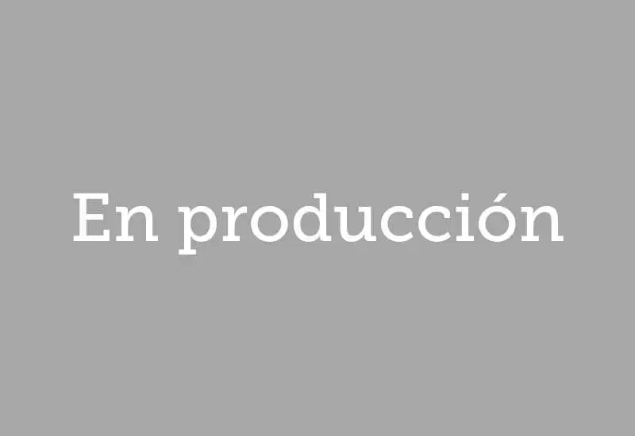

Clientes de Nubart GUIDE en todo el mundo
229 proyectos 27 países 5 continentes
Nubart GUIDE es una audioguía con código QR que funciona en el navegador del visitante, sin descargar ninguna app. Museos, castillos, catedrales, cuevas turísticas, estadios, campus universitarios, rutas urbanas y barcos turísticos de 27 países la utilizan para visitas autoguiadas. Algunos ejemplos son la Albertina de Viena, el Alcázar de Segovia, el Museo del FC Barcelona y el Ohio State Reformatory. En barcos y autobuses, el audio puede iniciarse automáticamente por GPS con Nubart MOTION. Más del 70 % de estos clientes también encargó a Nubart la producción del contenido de su audioguía. Escríbenos si necesitas referencias.
País
- Todos
- Alemania
- Andorra
- Australia
- Austria
- Bélgica
- Bulgaria
- Chile
- Dinamarca
- EAU (Abu Dabi)
- Eslovenia
- España
- Estados Unidos
- Finlandia
- Francia
- Israel
- Italia
- Japón
- Luxemburgo
- Montenegro
- Nueva Zelanda
- Países Bajos
- Perú
- Polonia
- Reino Unido
- Rumanía
- Suiza
- Tailandia
Tipo de lugar
- Todos
- Museo
- Castillo
- Iglesia
- Ruta urbana
- Azoteas y miradores
- Senderos y rutas
- Acuario
- Campus
- Estadio
- Memoriales y patrimonio
- Cementerio
- Barcos y vehículos
- Cueva


Deutsches Literaturarchiv Marbach, Marbach
Exposición permanente · Alemania

Illinois State University, Normal
Audiorruta · Estados Unidos

Matera City Tours, Matera
Tour en autobús · Italia

Barkassen Ehlers, Hamburgo
Paseo en barco · Alemania

Captain Cook Cruises, Sídney
Paseo en barco · Australia
Ajuntament d'Alcúdia, Islas Baleares
Ruta urbana · España
Mallorca Sea Paradise, Porto Cristo
Paseo en barco · España
Sendero Pla de Maset, Tarragona
Sendero · España

Mersey Ferries, Liverpool
Paseo en barco · Reino Unido

Miniatuur Museum, Ámsterdam
Exposición permanente · Países Bajos

EXPO Cave Karst Museum, Postojna
Exposición permanente · Eslovenia

Affordable Art Fair Battersea, Londres
Exposición temporal · Reino Unido

Museo Padre Hurtado Memorial de la Solidaridad, Santiago de Chile
Exposición permanente · Chile
Giardino Flora Appenninica, Capracotta
Exposición permanente · Italia

Spiekeroog, Islas Frisias Orientales
Exposición permanente · Alemania

Neopharm, Sofía
Exposición permanente · Bulgaria
Wien mal anders, Viena
Ruta urbana · Austria

Castillo de Pfalzgrafenstein, Kaub
Exposición permanente · Alemania

Museo Histórico Regional, Burgas
Exposición permanente · Bulgaria
Casa natal de Ringelnatz, Wurzen
Exposición permanente · Alemania
Museo Arqueológico Regional, Plovdiv
Exposición permanente · Bulgaria
Museo Nacional de Literatura, Sofía
Exposición permanente · Bulgaria
Caesarea City Tour, Cesarea
Ruta urbana · Israel · Nubart GUIDE + GAME
Fine Arts Gallery de la Ferris State University, Míchigan
Exposición permanente · Estados Unidos
Salou Tourist Guide, Salou
Ruta urbana · España
Jaciments arqueològics, Ibiza
Exposición permanente · España
Mallorca Literària, Mallorca
Exposición permanente · España
Zona K Card, Milán
Exposición temporal · Italia

Predjama Castle, Postojna
Exposición permanente · Eslovenia

Schloss Hellbrunn, Salzburg
Exposición permanente · Austria

Giubileo 2025, Bologna
Exposición temporal · Italia

Excursiones Menorca, Mahón
Excursión en barco · España

Hofstra University, Hempstead, NY
Visita al campus · Estados Unidos
Museum of The American Revolution, Philadelphia, PA
Exposición permanente · Estados Unidos

CCCB Amazonas, Barcelona
Exposición temporal · España

Coats Paisley, United Kingdom
Audiorruta · Reino Unido

45 Works From the BNB Art Collection, Bulgaria
Exposición temporal · Bulgaria
Archiginnasio, Bologna
Exposición permanente · Italia

CCCB, Agnès Varda exhibition, Barcelona
Exposición temporal · España
Underground Spaces of Rome, Rome
Audiorruta · Italia

Bilboats, Bilbao
Paseo en barco · España

MAXXI - Museo Nacional de Arte del Siglo XXI
Exposición permanente · Italia

Dry Dock Logistics
Audiorruta · España

Franz von Stuck - Galería Nacional, Sofia
Exposición temporal · Bulgaria
Comarca Cinco Villas, Los Bañales
Audiorruta · España

Parque del castillo de Putbus
Exposición permanente · Alemania

Las Golondrinas (Copa América), Barcelona
Paseo en barco · España

Comarca Cinco Villas, Luesia
Audiorruta · España

Pazardzhik
Audiorruta · Bulgaria

Hristo Stoichkov Museum, Sofia
Exposición permanente · Bulgaria

Recorrido por un campo de lavanda, Villesèque
Audiorruta · Francia

Petach Tikva Rishonim Museum, Petach Tikva
Exposición permanente · Israel

Municipio de Tauste, Comarca Cinco Villas, Zaragoza
Audiotour · España

IMAGINE !, The Royal Museums of Fine Arts, Brussels
Exposición temporal · Bélgica

Biota, Comarca Cinco Villas, Zaragoza
Audiotour · España
Uncastillo, Comarca Cinco Villas, Zaragoza
Audiotour · España

Museu Casteller de Catalunya, Valls
Exposición permanente · España

Museo Etnológico, Kolbuszowa
Exposición permanente · Polonia

Kokelhus of Jan and Sjut, Earnewald
Exposición permanente · Países Bajos

County Council Celanova, Orense
Audiorruta · España

WKE - Conciertos en el Palacio de Schönbrunn, Viena
Audioguía · Austria

Museo de Carruajes Antiguos, Roma
Exposición permanente · Italia
"AI: Inteligencia Artificial" en el CCCB, Barcelona
Exposición temporal · España

Osterville Village Library, Massachusetts
Audiotour · Estados Unidos

"Zlatyu Boyadzhiev", Galería Nacional de Arte, Sofía
Exposición temporal · Bulgaria
Rakia Museum
Exposición permanente · Bulgaria

Iglesia Evangélica de Bistrita, Bistrita
Exposición permanente · Rumanía

Hermannshöhle - stalagmite caves of Rübeland, Oberharz am Brocken
Exposición permanente · Alemania

Grifols Museum, Barcelona
Exposición permanente · España

Naval Heritage Collection Museum, Tivat
Exposición permanente · Montenegro

Hotel Krallerhof, Leogang
Evento · Austria

Marquis de Sade - CCCB, Barcelona
Exposición temporal · España

Kardzhali Province, Kardzhali
Audiotour · Bulgaria

Smolyan Province, Smolyan
Audiotour · Bulgaria

Haskovo Province, Haskovo
Audiotour · Bulgaria

Musea Brugge, Brujas
Exposición permanente · Bélgica · Nubart GUIDE + SYNC

Sádaba, Comarca Cinco Villas, Zaragoza
Ruta urbana · España

Colecciones Municipales de Freital en el Castillo de Burgk, Freital
Audioguía · Alemania · Nubart GUIDE + GAME

Besondere Orte Berlin, Berlin
Ruta urbana · Alemania

Barkassen Meyer Hamburg, Hamburgo
Paseo en barco · Alemania

Sos del Rey Católico, Comarca Cinco Villas, Zaragoza
Audiorruta · España
Arcipelago Campano Territorial, Naples
Audiorruta · Italia

Municipio de El Torno, Cáceres
Audioguía · España

Municipio de Rebollar, Cáceres
Audioguía · España

Municipio de Piornal, Cáceres
Audioguía · España

Municipio de Cabezuela del Valle, Cáceres
Audioguía · España

Palazzo Pepoli, Bologna
Audioguía · Italia

Palazzo Santa Maria, Bologna
Audioguía · Italia

San Colombano, Bologna
Audioguía · Italia

Palazzo Fava, Bologna
Audioguía · Italia

Cap San Diego, Hamburg
Barco museo · Alemania

Port of Humanity Tsuruga Museum, Tsuruga
Exposición permanente · Japón

Historic Rock Ford - Lancaster, PA
Audiotour · Estados Unidos

Ciudad de Hoyerswerda, castillo y campo de prisioneros de guerra, Sajonia
Audiotour · Alemania

Museo de la Intendencia, Ávila
Exposición permanente · España

Ayuntamiento de Nogales, Badajoz
Audiorruta · España

Harriet Beecher Stowe Center - Hartford, CT
Ruta histórica · Estados Unidos

Hundertwasser Art Center - Whangārei, Nueva Zelanda
Exposición permanente · Nueva Zelanda

Capellanía urbana y turística de Worms - Diócesis de Maguncia
Exposición permanente · Alemania

The Barber Vintage Motorsports Museum - Birmingham, AL
Exposición permanente · Estados Unidos

Andorra Turisme, Andorra la Vella
Audiotour · Andorra

Chaldean Cultural Center - West Bloomfield, MI
Exposición permanente · Estados Unidos

Cueva de Baumann - cuevas de estalagmitas de Rübeland, Oberharz am Brocken
Exposición permanente · Alemania

Museo municipal de Andernach, Rheinland-Pfalz
Exposición permanente · Alemania

Around Tahoe Tours - Incline Village, NV
Audiotour · Estados Unidos

Museo de los Fideos Franz Tress, Münsingen
Exposición permanente · Alemania

Cervell(s), CCCB, Barcelona
Exposición temporal · España

Las Golondrinas, Barcelona
Excursión en barco · España

Museo de la minería, Brand-Erbisdorf
Exposición permanente · Alemania

MUSME (Museo de Historia de la Medicina de Padua), Padua
Exposición permanente · Italia

KUNSTHAUS : KOLLITSCH, Klagenfurt
Audioguía · Austria

Obispado Osma-Soria
Audiorruta · España

Municipios del Valle del Jerte, Extremadura
Audiorruta · España

REG Vetschau, Spreewald, Brandenburgo
Audiorruta · Alemania

Catamaranes Bahía de Cádiz, Puerto de Santa Maria
Paseo en barco · España

Formae Lucis, Diócesis de Albenga
Exposición temporal · Italia

Palacio de Detmold, Renania del Norte-Westfalia
Exposición permanente · Alemania

Holiday Lines - Menorca, Baleares
Paseo en barco · España

Panagyurishte, Provincia de Pazardzhik
Ruta urbana · Bulgaria

Museo del Esperanto, Biblioteca Nacional de Austria, Viena
Exposición permanente · Austria

Museo Naval - Barco de la Virgen - Santa Cruz de La Palma, Islas Canarias
Exposición permanente · España

Bodegas El Grifo - Lanzarote, Islas Canarias
Exposición permanente · España
Ruta de descubrimiento familiar - Sant Cugat del Vallès
Audiorruta · España

La máscara no menteix mai - CCCB - Barcelona
Exposición temporal · España

Gabriel Ferrater - Museu de Sant Cugat - Sant Cugat del Vallès
Exposición temporal · España

Museo Holandés de la Masonería - La Haya
Exposición permanente · Países Bajos

Ohio State Reformatory - Mansfield, OH
Exposición permanente · Estados Unidos · Nubart GUIDE + GAME

Museo de la Ciudad de Pulsnitz
Exposición permanente · Alemania

Museo de la isla de Poel
Exposición permanente · Alemania

Tsari Mali Grad
Audiorruta · Bulgaria

MS Artville - Hamburg
Exposición temporal · Alemania

Diócesis de Albenga
Exposición permanente · Italia

Pro Loco Bolsena
Ruta urbana · Italia

Chavdar
Audiorruta · Bulgaria

Samokov
Audiorruta · Bulgaria

St Helen, OR
City marketing · Estados Unidos

Memorial Stalag VIII - Görlitz
Exposición permanente · Alemania

Txibilikoi - Brai, San Sebastián
Excursión en barco · España

Museo del Globo - Biblioteca Nacional de Austria, Viena
Exposición permanente · Austria

Museo de la Cerveza Mönchshof
Exposición permanente · Alemania

Museo Casa Botines - León
Exposición permanente · España

Semana Santa Marinera - Valencia
Exposición permanente · España

Bad Münstereifel
City marketing · Alemania

Islas Feroe
Audiorruta · Dinamarca

Ciencia Fricción - CCCB, Barcelona
Exposición temporal · España

De Thomas - Amsterdam
Exposición permanente · Países Bajos

Visita Baden
Exposición permanente · Austria

Pravets
Exposición permanente · Bulgaria

Museo de Prehistoria de Blaubeuren
Exposición permanente · Alemania

Marte, el espejo rojo - CCCB, Barcelona
Exposición temporal · España

Centro de Historia Militar - Broken Arrow, OK
Exposición permanente · Estados Unidos

Museo del Papiro - Biblioteca Nacional de Austria, Viena
Exposición permanente · Austria

Instituto Hindemith - Frankfurt
Exposición permanente · Alemania

Museo de los Valdenses - Ötisheim
Exposición permanente · Alemania

¡Enorme! Mar del Norte - Museo de Frisia del Norte
Exposición temporal · Alemania

Museo del vino - Arnhem
Exposición permanente · Países Bajos

Central Washington Agricultural Museum - Union Gap, WA
Exposición permanente · Estados Unidos

Museo Mittelrhein - Coblenza
Exposición permanente · Alemania

Monasterio de Sant Cugat - Barcelona
Exposición permanente · España

Más que abejas - Museo de la ciencia, Barcelona
Exposición temporal · España

Bahnhof Zoo - Querstadtein, Berlín
Ruta urbana · Alemania

Museo de la máquina-herramienta - Elgoibar
Exposición permanente · España

Bellver de Cerdanya
Exposición permanente · España

Casa de Victor Hugo - Vianden
Exposición permanente · Luxemburgo

Museo de la Pesca - Palamós
Exposición permanente · España · Nubart GUIDE + LIVE

Botánico Biotecnológico - Ibiza
Exposición permanente · España

Grote Kerk - Naarden
Exposición permanente · Países Bajos

Museum Angewandte Kunst - Frankfurt
Exposición permanente · Alemania

Complejo museístico de Hel
Exposición permanente · Polonia

Museu del Disseny - Barcelona
Exposición permanente · España

Centro WeeGee - Espoo
Exposición permanente · Finlandia

Isla de Bled - Museo nacional de Eslovenia, Liubliana
Exposición permanente · Eslovenia

Barrio de Barranco - Lima
Audiorruta · Perú

Albertina Modern - Viena
Exposición temporal · Austria

Templos y lugares sagrados - Bangkok
Audiorruta · Tailandia

Castillo de San Marcos - Cádiz
Exposición permanente · España

Museo del Reino de Granada - Granada
Exposición permanente · España

Gadäwäg - Klosters Davos
Ruta al aire libre · Suiza

Desert Island - Abu Dhabi
Tour por la isla · EAU

Museo Etnográfico - Ibiza
Exposición permanente · España

Alcazaba y Gibralfaro - Málaga
Exposición permanente · España

Museo municipal de Llívia
Exposición permanente · España

Fortaleza de Ehrenbreitstein - Coblenza
Exposición permanente · Alemania

Parque natural de Chiloé
Exposición permanente · Chile

Stanley Kubrick - CCCB, Barcelona
Exposición temporal · España

Catedral - Burgo de Osma
Exposición permanente · España

Gameplay - CCCB, Barcelona
Exposición permanente · España

Castillo de Vianden
Exposición permanente · Luxemburgo

The Best of Amsterdam
Ruta urbana · Países Bajos

Steinzeitpark Dithmarschen
Exposición permanente · Alemania

Carácter Pop - Museo de la Nación, Lima
Exposición temporal · Perú

Contemporary Muslim Fashions - Museum Angewandte Kunst, Frankfurt
Exposición temporal · Alemania

Museo Can Prunera - Mallorca
Exposición permanente · España

Luz negra - CCCB, Barcelona
Exposición temporal · España

Dinosfera - Coll de Nargó
Exposición permanente · España

Fundació Mas Miró - Montroig
Exposición permanente · España · Nubart GUIDE + GAME

Museu Faller - Valencia
Exposición permanente · España

Nexo Turismo y Cultura
Monumentos naturales de El Maestrazgo · España

Holmegaard Vaerk
Exposición permanente · Dinamarca

Espacio Fundación Telefónica - Madrid
Exposición permanente · España

Chávez - Museo de la Nación, Lima
Exposición temporal · Perú

Fundació Tàpies - Barcelona
Exposición permanente · España

Museu Thermalia - Caldes de Montbui
Exposición permanente · España

1000 m2 de deseo - CCCB, Barcelona
Exposición temporal · España

La máquina de pensar: Ramon Llull - CCCB, Barcelona
Exposición permanente · España